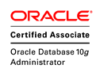
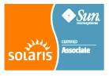
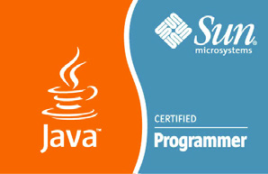

ELAMIN MOHAMED ALI AHMED
Database Developer / Administrator

E D U C A T I O N
Bachelor of Engineering
Sudan University of Science and Technology [2005]
Bachelors with honors in Electronics Engineering (computer department)
[v.good]
E X P E R I E N C E
System Developer / Accountant
Proscope Medical Company [2017 - 2022]
-
Developed company database system that manages inventory and invoices
- Perform backup and recovery
- Handle day to day bookkeeping and accounting
Computer Technician
Surveying Systems [2011 - 2016]
- Installing operating systems
- Troubleshooting a variety of computer issues
- Setting up computer security measures
- Offering technical support
OS and Network Administrator
Dardachat Communications [2007 - 2009]
- Installing hardware and software systems
- Maintaining or repairing equipment
- Configuring computer networks
C E R T I F I C A T E S
- Oracle Database 10g Administrator Certified Professional OCP
- Oracle Database 10g Administrator Certified Associate OCA
- Oracle PL/SQL Developer Certified Associate
- Sun Certified Solaris Associate SCSAS
- Sun Certified Programmer for the Java Platform, SE 5.0 SCJP



S K I L L S
Arabic ⭐️⭐️⭐️⭐️⭐️
English ⭐️⭐️⭐️⭐️
MS Word ⭐️⭐️⭐️⭐️⭐️
MS Excel ⭐️⭐️⭐️⭐️
Photoshop ⭐️⭐️⭐️⭐️